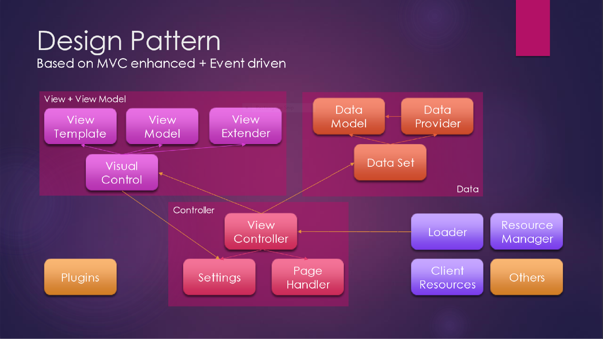

A JavaScript library that helps you to create rich web apps with low cost to build and maintain.

For Type Script user (required version 2.0 or higher), please download Quark typed definition file to get comment documentation.
Select one on the left to read further information.
You can add following code to insert the library directly.
<script type="text/javascript" src="https://g.alicdn.com/hub/quark/1.8.1000/scripts/index.min.js" charset="utf-8"></script>
But you can also import Quark by asynchronous modules loader as well as static script reference. And that way is recommended.
Quark works well by Asynchronous Module Definition (AMD) with RequireJs. Please just put the file in the directories for references, or import by loader config.
RequireJs can be downloaded from https://requirejs.org/docs/download.html.
Firstly, adds following script in the page.
<script type="text/javascript" src="https://g.alicdn.com/hi/quark/1.8.1000/index.js" charset="utf-8"></script>
It will extends KISSY automatically, such as AMD modules loader capability. And then, you can resolve it in your module by following script.
require("quark/script/import.min.js");